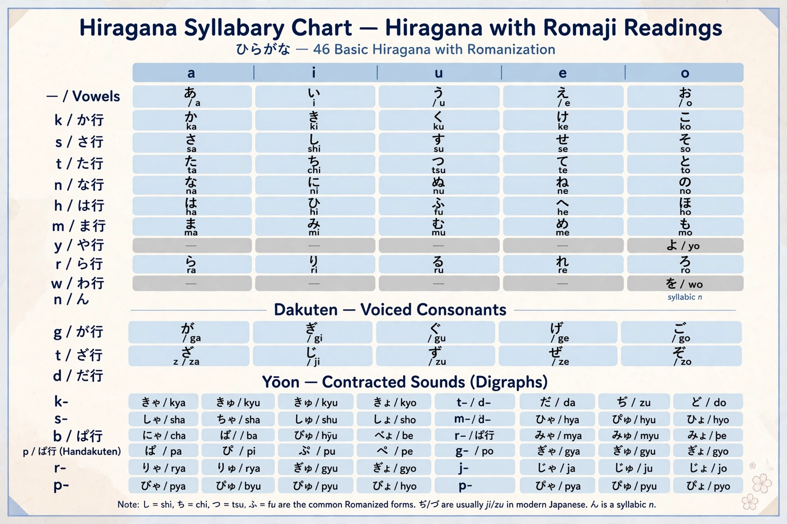

Japanese language

Native to: Japan
Native speakers: c. 125 million
Language family: Japonic
Writing system: Kanji (Chinese characters), hiragana, katakana, rōmaji
Standard dialect: based on Tokyo speech
Japanese (日本語) is the national language of Japan, spoken by about 125 million people, and the principal member of the Japonic language family alongside the Ryukyuan languages. It has no widely accepted genealogical relationship to other language families, and is notable for its complex system of honorific speech (keigo) and its mixed writing system combining logographic kanji with two syllabaries, hiragana and katakana.
History
Chinese writing reached Japan by about the 5th century CE, and Japanese was first written using characters phonetically in the Man'yōshū (c. 759). The kana syllabaries were simplified from characters during the Heian period, when Murasaki Shikibu wrote The Tale of Genji (c. 1008), often called the world's first novel. Massive layers of vocabulary were borrowed from Chinese (these Sino-Japanese words form a large share of the lexicon), and since the 19th century from English and other European languages.
Grammar and phonology
Japanese is an agglutinative, subject–object–verb language using particles to mark grammatical roles, with verbs and adjectives conjugating for tense, politeness and mood but not for person or number. Its sound system has five vowels, mora-based timing and pitch accent. Nouns are counted with classifier words, and levels of formality permeate the grammar. See Grammar and Phonetics.